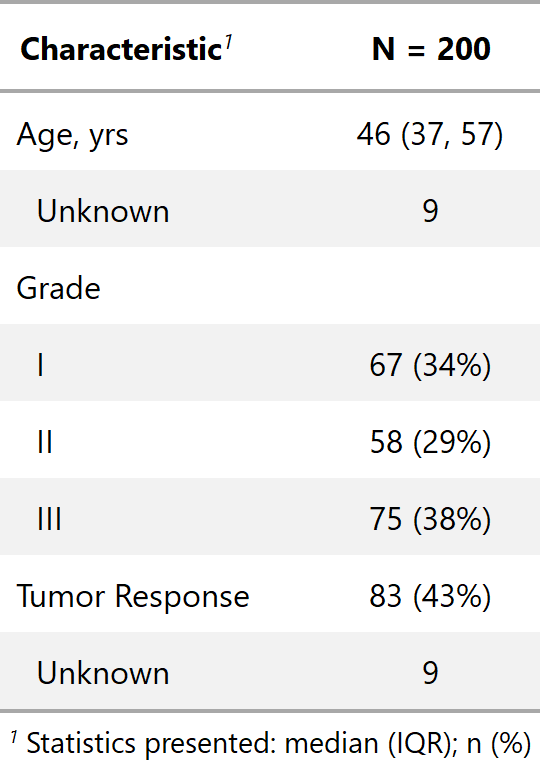
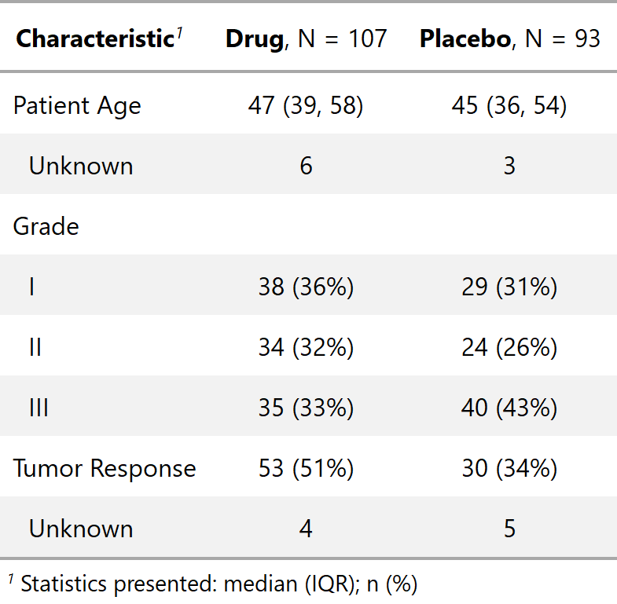

| tbl_summary {gtsummary} | R Documentation |
The tbl_summary function calculates descriptive statistics for
continuous, categorical, and dichotomous variables. Review the
tbl_summary vignette
for detailed examples.
tbl_summary(data, by = NULL, label = NULL, type = NULL,
value = NULL, statistic = NULL, digits = NULL, group = NULL,
missing = c("ifany", "always", "no"), missing_text = "Unknown",
sort = NULL, row_percent = FALSE)
data |
a data frame |
by |
a character vector specifying a column in data.
Summary statistics will be calculated separately for each level of the |
label |
named list of variable labels,
e.g. |
type |
named list that specifies data types of variables. Accepted values
are |
value |
named list that specifies the value to display for dichotomous variables. See below for details. |
statistic |
named list of the types of summary statistics to display
for each variable or variable class. The default is
|
digits |
named list of integers indicating the number of decimal
places to round continuous summary statistics. Names of the list can be any
continuous variable in 'data', or |
group |
character vector of an ID or grouping variable for which summary
statistics should not be printed. The column may be used in add_p to
calculate p-values with correlated data. Default is |
missing |
indicates whether to include counts of |
missing_text |
String to display label for count of missing observations.
Default is |
sort |
named list indicating the type of sorting to perform. Default is NULL. Options are 'frequency' where results are sorted in descending order of frequency and 'alphanumeric' |
row_percent |
logical value indicating whether to calculate
percentages within column or across rows. Default is to calculate
percentages within columns: |
The statistic argument specifies the statistics presented in the table. The
input is a named list where the names correspond to the column names from the
input 'data' and the elements specify the statistic to report. For example,
statistic = list(age = "{mean} ({sd})") would report the mean and
standard deviation for age. A statistic name that appears between curly brackets
will be replaced with the numeric statistic (see glue::glue).
For categorical variables the following statistics are available to display.
{n} frequency
{N} denominator, or cohort size
{p} percent formatted by style_percent
For continuous variables the following statistics are available to display.
{median} median
{mean} mean
{sd} standard deviation
{var} variance
{min} minimum
{max} maximum
{p##} any integer percentile, where ## is an integer from 0 to 100
{foo} any function of the form foo(x) is accepted where x is a numeric vector
If all continuous or categorical variables will be summarized with the same
statistics, the ..continuous.. and ..categorical.. shortcuts can be used
in place of the individual column names. Dichotomous variables are summarized
as categorical variables.
tbl_summary displays summary statistics for three types of data:
continuous, categorical, and dichotomous. If the type is not specified,
tbl_summary will do its best to guess the type. Dichotomous variables
are categorical variables that are displayed on a single row in the
output table, rather than one row per level of the variable.
Variables coded as TRUE/FALSE, 0/1, or yes/no are assumed to be dichotomous,
and the TRUE, 1, and yes rows
will be displayed. Otherwise, the value to display must be specified in
the value argument, e.g. value = list(varname = "level to show")
Example 1

Example 2

Daniel D. Sjoberg
Other tbl_summary tools: add_n,
add_overall, add_p,
add_q.tbl_summary,
add_stat_label,
bold_italicize_labels_levels,
cols_label_summary,
inline_text.tbl_summary,
sort_p.tbl_summary,
tab_style_bold_p.tbl_summary
tbl_summary_ex1 <-
trial %>%
dplyr::select(age, grade, response) %>%
tbl_summary()
tbl_summary_ex2 <-
trial %>%
dplyr::select(age, grade, response, trt) %>%
tbl_summary(
by = "trt",
label = list(age = "Patient Age")
)